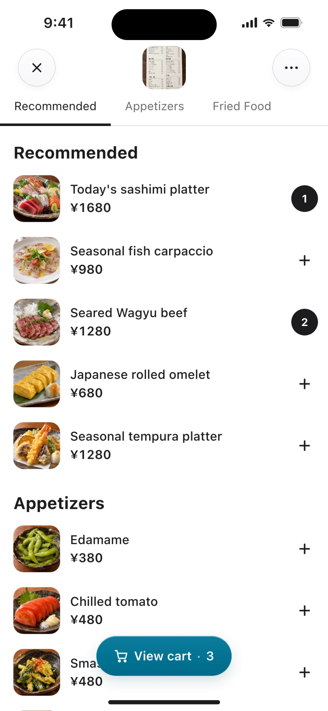
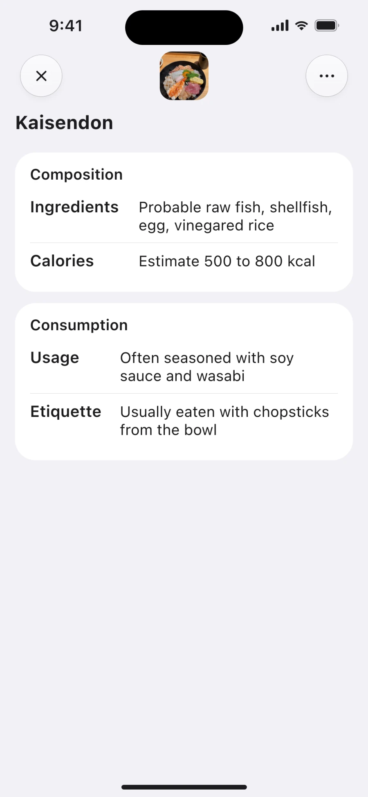
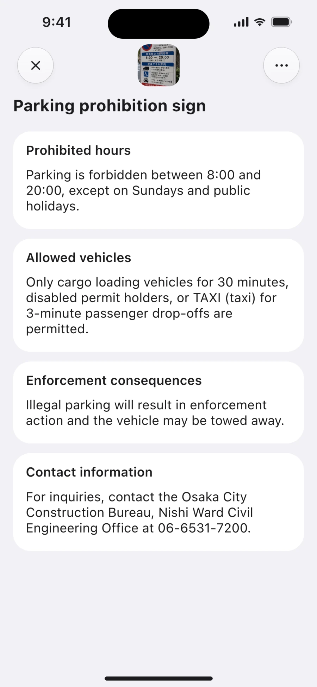
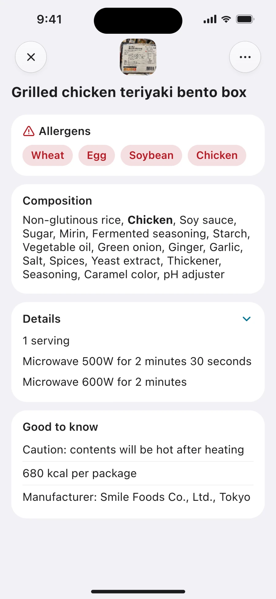
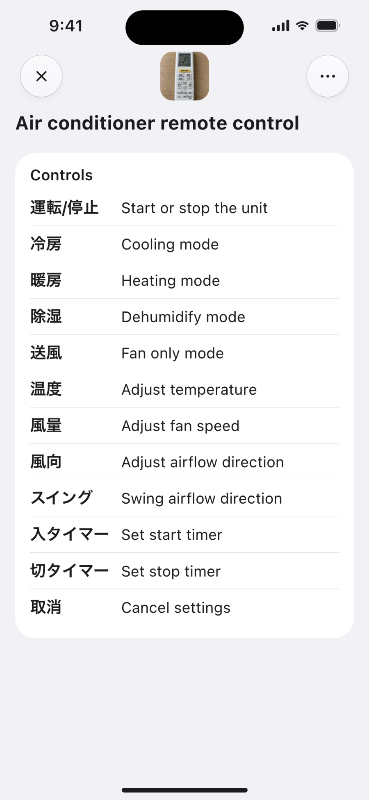
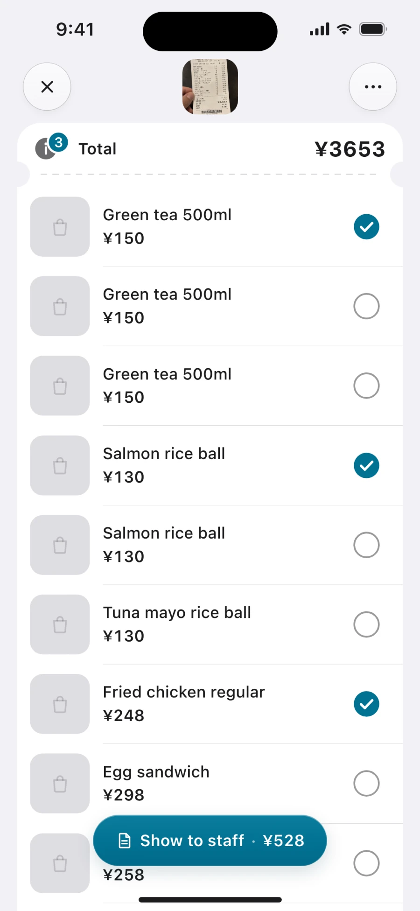
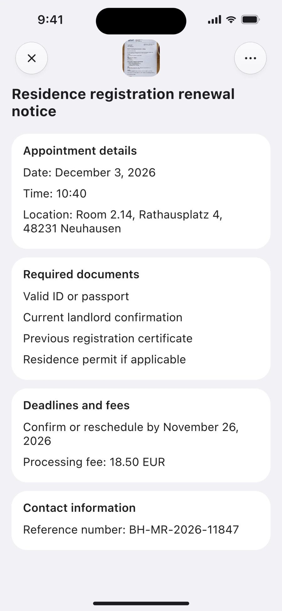
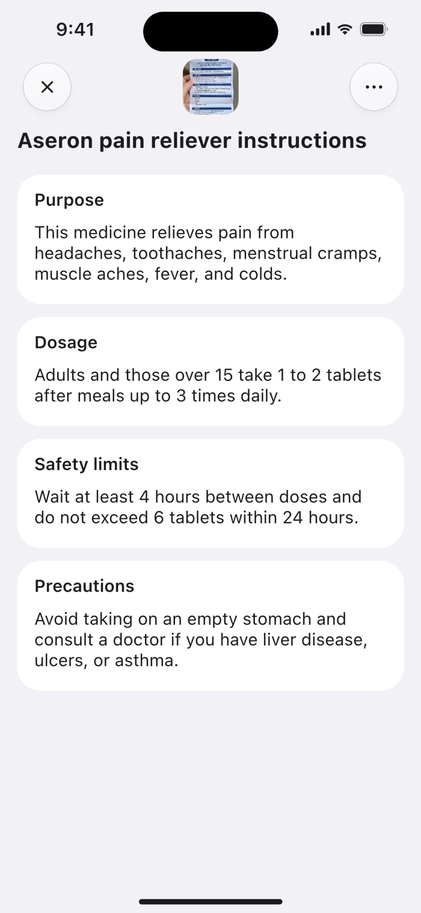
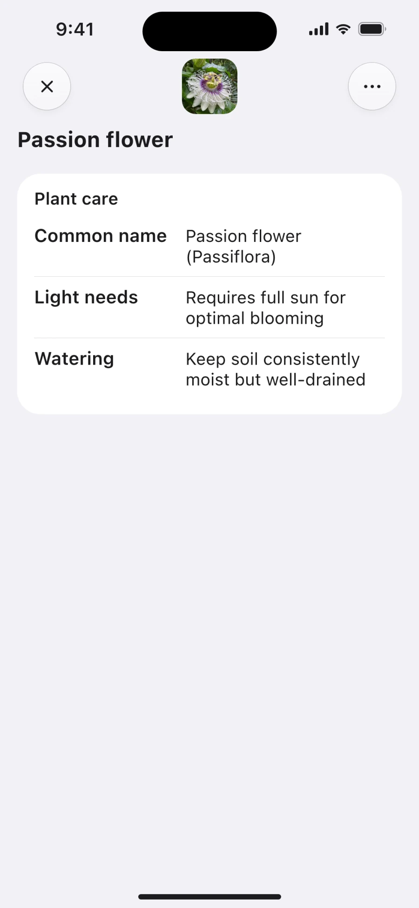
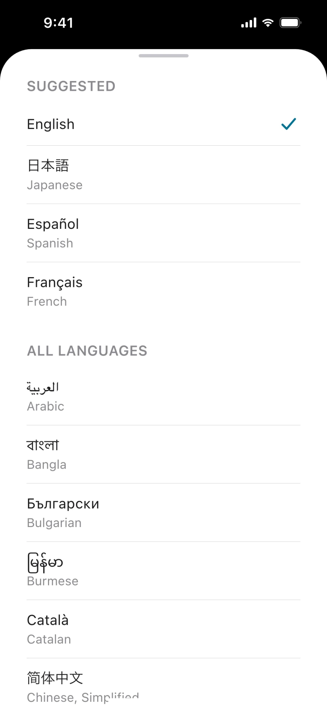

Scani — Point. Scan. Understand.
You see thisScani tells you










Free. Unlimited. No account.
Point. Scan. Understand.
- Menu
- Food
- Sign
- Product
- Appliance
- Receipt
- Document
- Instructions
- Plant
Free. Unlimited. No account.